MolFeatures Tutorial
This tutorial walks through the most common MolFeatures flow: prepare data, extract descriptors, assemble a feature matrix, run modeling, and inspect the saved results.
If you want the shorter front page, open README.html.
M2_data_extractor or the GUI to define descriptors.M3_modeler.Installation
These are the most useful setup commands to run before working through the notebooks or the GUI.
Create an environment
python -m venv .venv
.venv\Scripts\activateInstall MolFeatures in editable mode
python -m pip install -U pip
python -m pip install -e .Install notebook extras
python -m pip install -e ".[notebooks]"Optional: install BASSA
pip install bassa-regSome workflows also depend on external chemistry tools such as Gaussian or Open Babel, which are installed separately from pip.
Big-picture pipeline
This visual gives a compact view of the workflow that MolFeatures is built around: starting from molecular inputs, generating 3D structures, running calculations, extracting descriptors, then building models from the resulting feature matrix.
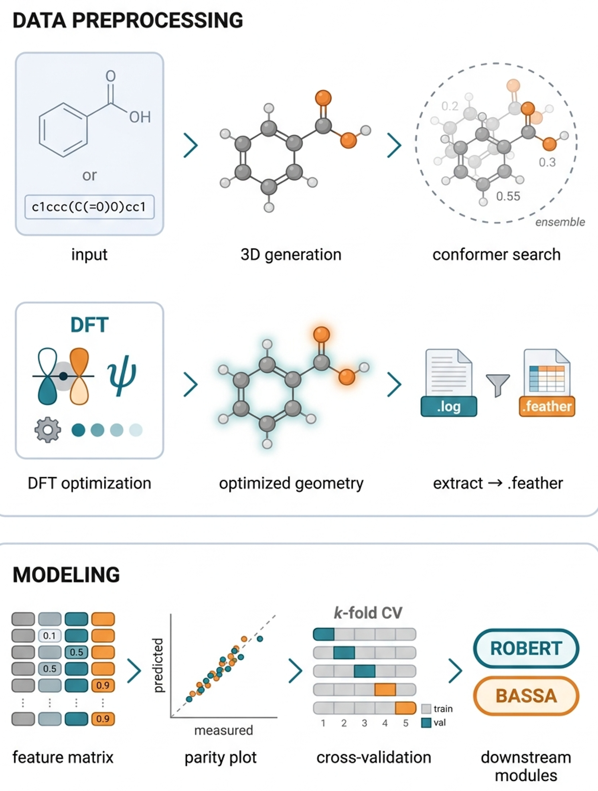
What each module does
Prepare external calculation inputs and submission helpers.
Turn molecular files into descriptors and feature tables.
Search and evaluate models, then save rankings and metrics.
Alignment and renumbering utilities for structure handling.
Path 1: start from feather files
This is the smoothest route when your molecular data has already been converted into .feather files.
Step 1. Launch the GUI
python __main__.py guiUse the GUI when you want to inspect molecules before extracting descriptors, choose atoms interactively, save extraction setups as JSON, and test descriptor families quickly.
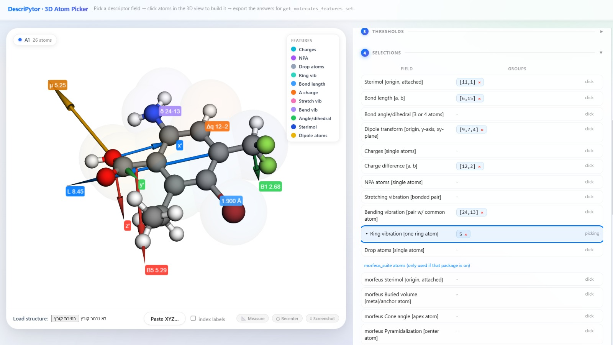
Step 2. Reuse a saved extraction config
python __main__.py extractor \
--input Getting_started_with_examples/feather_example/input_example.json \
--output feature_set \
--feather_directory Getting_started_with_examples/feather_exampleTypical outputs include a feature matrix CSV, optional correlation summaries, and any plots configured by the extraction path.
Path 2: convert Gaussian logs first
python __main__.py logs_to_feather -> feather dataset -> extractor or GUI workflow.
python __main__.py logs_to_featherThe command prompts for the directory containing log files and writes feather outputs for downstream extraction.
Descriptor extraction in Python
If you prefer scripting instead of the GUI, follow the same pattern used in Practical_Notebook_Features.ipynb.
import os
import sys
ROOT_DIR = r"C:\Users\edens\Desktop\DescriPytor\DescriPyTor-main\MolFeatures"
sys.path.append(ROOT_DIR)
sys.path.append(os.path.join(ROOT_DIR, "M2_data_extractor"))
os.chdir(ROOT_DIR)
from data_extractor import Molecules
feather_path = os.path.join(ROOT_DIR, "Getting_started_with_examples", "feather_example")
mols = Molecules(feather_path)
# first inspect a structure, then build descriptor inputs
mols.visualize_molecules([0])Once your atom selections are defined, the notebook workflow uses get_molecules_features_set(...) to save a feature matrix and correlation table.
Feature extraction example
answers_dict = {
"Sterimol": "[[1, 6], [3, 4]]",
"Bond-Angle": "[1, 2, 3]",
"Dipole": "[[1, 2, 3], 5, 6]",
"Charges": "[1, 3, 5]",
}
df = mols.get_molecules_features_set(
entry_widgets=answers_dict,
answers_list=None,
save_as=True,
csv_file_name="tutorial_features",
)Convert Gaussian logs to feather files
from feather_extractor import logs_to_feather
logs_to_feather(r"C:\path\to\gaussian_logs")Sterimol and geometry views
These screenshots are useful when you want to explain how Sterimol-style geometry is measured from different viewpoints. They complement the GUI examples by showing both the 3D object and the projected slices used for interpretation.
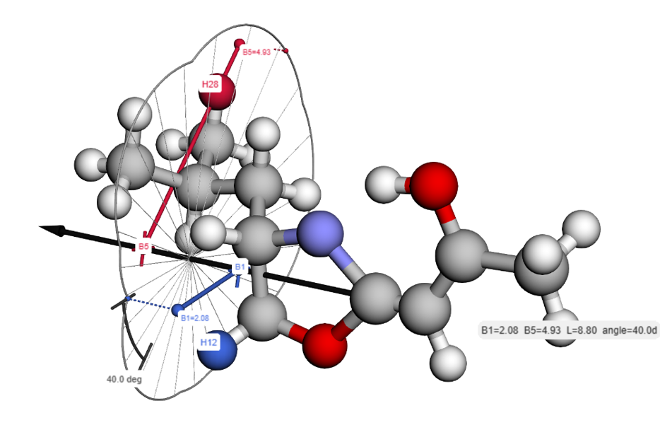
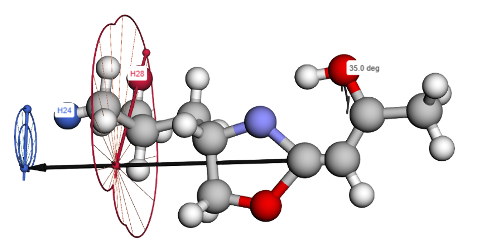
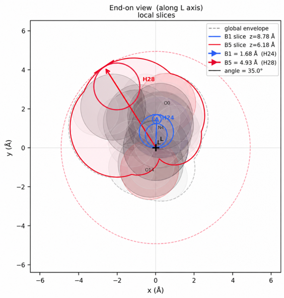
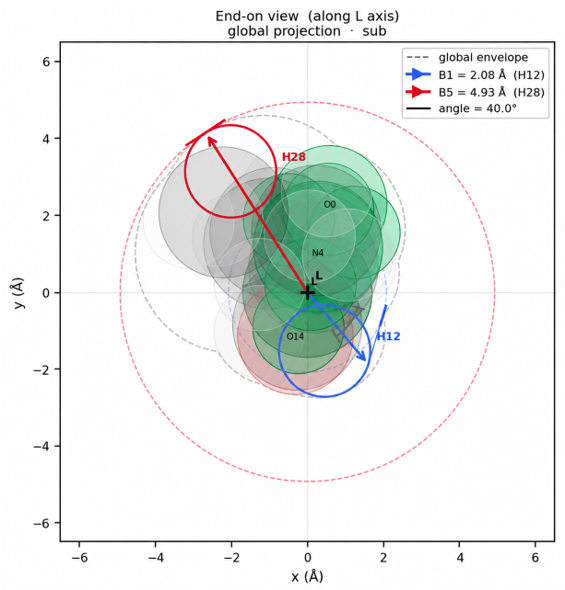
Conformer comparison and visual inspection
MolFeatures also includes viewer-oriented utilities for comparing related structures and checking how conformers align in 3D. That helps when you are validating atom numbering, ring alignment, or ensemble consistency before extraction.
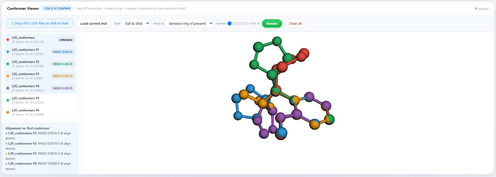
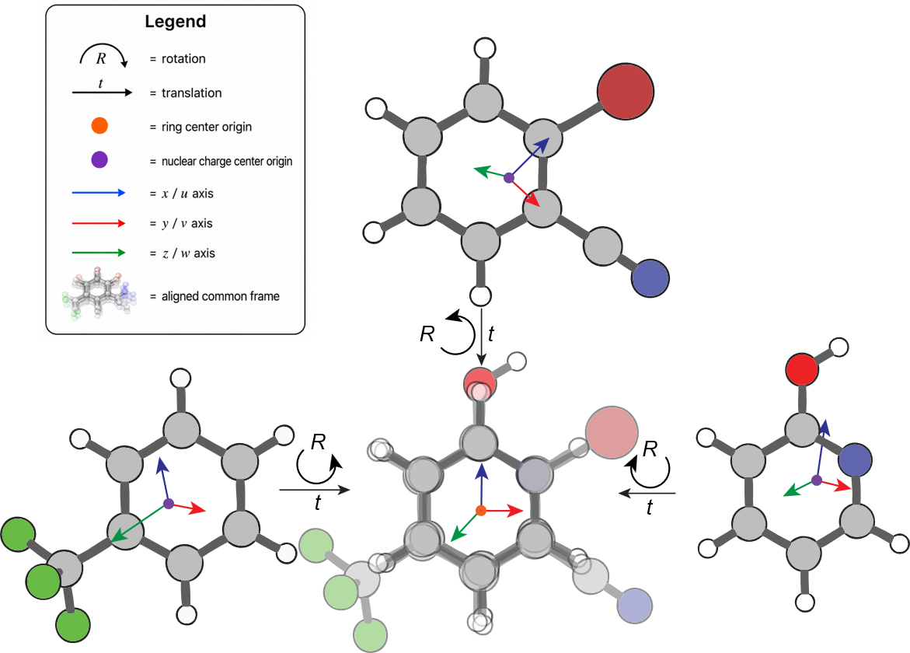
Modeling workflow
Regression example
The modeling notebook uses a one-CSV setup and instantiates LinearRegressionModel directly. A repo-local example looks like this:
import os
import sys
ROOT_DIR = r"C:\Users\edens\Desktop\DescriPytor\DescriPyTor-main\MolFeatures"
sys.path.append(ROOT_DIR)
sys.path.append(os.path.join(ROOT_DIR, "M3_modeler"))
os.chdir(ROOT_DIR)
from modeling import LinearRegressionModel
csv_path = os.path.join(
ROOT_DIR,
"Getting_started_with_examples",
"modeling_example",
"Linear_Dataset_Example.csv",
)
csv_filepaths = {
"features_csv_filepath": csv_path,
"target_csv_filepath": "",
}
regression_model = LinearRegressionModel(
csv_filepaths,
process_method="one csv",
y_value="output",
leave_out=[],
min_features_num=2,
max_features_num=3,
)
results = regression_model.search_models(top_n=20, threshold=0.70, n_jobs=16)The equivalent CLI form is:
python __main__.py model \
--mode regression \
--features_csv Getting_started_with_examples/modeling_example/Linear_Dataset_Example.csv \
--y_value output \
--min-features 2 \
--max-features 3 \
--top-n 20 \
--threshold 0.70 \
--n_jobs 16Classification example
python __main__.py model \
--mode classification \
--features_csv Getting_started_with_examples/modeling_example/Logistic_Dataset_Example.csv \
--y_value class \
--min-features 2 \
--max-features 4 \
--top-n 20 \
--threshold 0.50 \
--n_jobs 16Classification example in Python
from modeling import ClassificationModel
csv_filepaths = {
"features_csv_filepath": os.path.join(
ROOT_DIR,
"Getting_started_with_examples",
"modeling_example",
"Logistic_Dataset_Example.csv",
),
"target_csv_filepath": "",
}
clf = ClassificationModel(
csv_filepaths,
process_method="one csv",
y_value="class",
leave_out=[],
min_features_num=2,
max_features_num=4,
)
results = clf.search_models(top_n=20, threshold=0.50, n_jobs=16)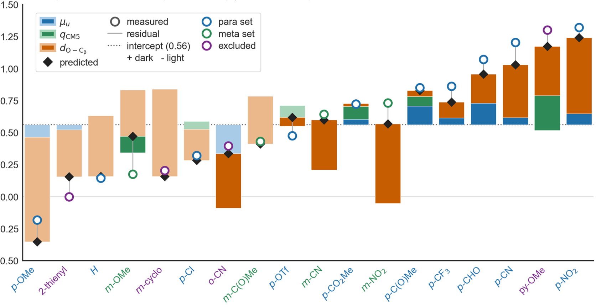
BASSA quick start
If you want a Bayesian sparse-regression workflow that keeps multiple plausible linear explanations in play, BASSA fits naturally after descriptor generation and feature-matrix preparation.
Install
pip install bassa-regFor higher-quality plots, the BASSA project also recommends installing a local LaTeX distribution such as MiKTeX on Windows.
Minimal example
import os
import numpy as np
import pandas as pd
from bassa_reg import Bassa
from bassa_reg.spike_and_slab.spike_and_slab import (
SpikeAndSlabConfigurations,
SpikeAndSlabRegression,
)
from bassa_reg.spike_and_slab.spike_and_slab_util_models import SpikeAndSlabPriors
def generate_data(N, M, K, noise_level=0.1):
X = pd.DataFrame(np.random.randn(N, M), columns=[f"s_{i}" for i in range(M)])
coefficients = np.random.randn(K)
Y = pd.Series(X.iloc[:, :K].dot(coefficients) + np.random.randn(N) * noise_level)
return X, Y
x_train, y_train = generate_data(100, 20, 5)
priors = SpikeAndSlabPriors()
config = SpikeAndSlabConfigurations(sampler_iterations=5000)
project_dir = os.getcwd()
regression = SpikeAndSlabRegression(
x=x_train,
y=y_train,
priors=priors,
config=config,
project_path=project_dir,
experiment_name="demo",
)
regression.run()
bassa = Bassa(model=regression)
bassa.run()Prediction on new data
from bassa_reg.spike_and_slab.spike_and_slab_util_models import TestSet
test_set = TestSet(
x_test=x_test,
samples_per_y=100,
iterations=200,
)
regression = SpikeAndSlabRegression(
x=x_train,
y=y_train,
priors=priors,
config=config,
test_set=test_set,
project_path=project_dir,
experiment_name="prediction_demo",
)
regression.run()After both the spike-and-slab regression and BASSA run, the project directory contains the BASSA plots and summary CSV files.
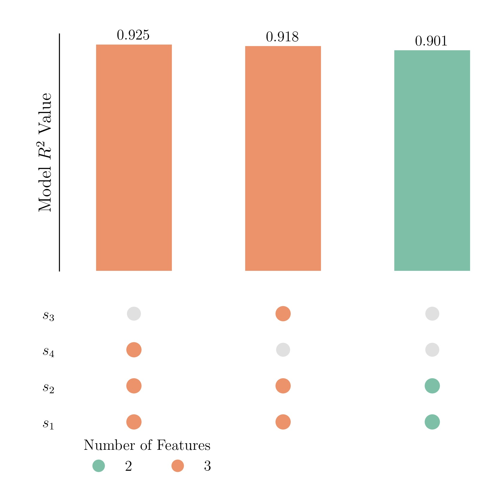
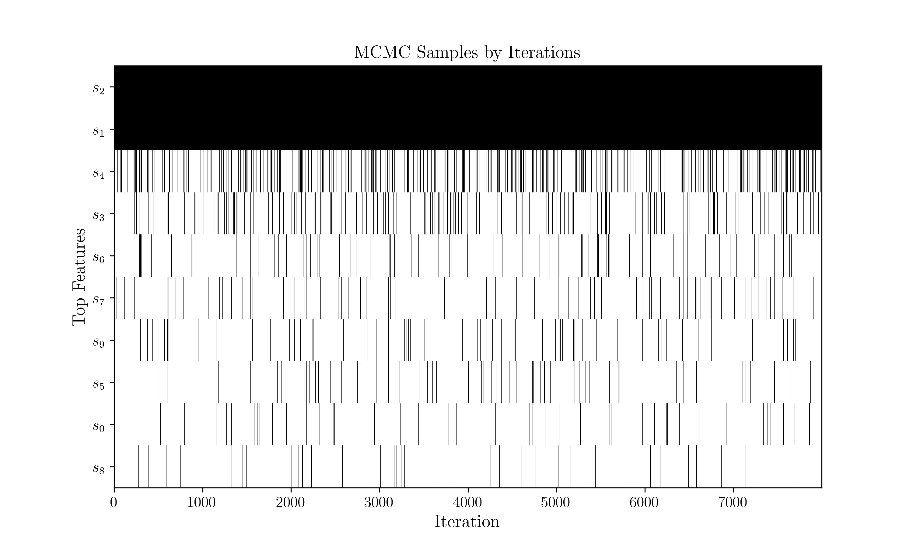

Parallel modeling note
For large regression searches, --n_jobs is the main control for parallelism.
- On a 20-core machine, start with
--n_jobs 16. - Move to
18if memory usage stays comfortable. - Use
20only if the machine remains responsive and the dataset is not memory-heavy.
Large searches may still take time because feature-combination counts grow very quickly.
Suggested first session
- Run
python __main__.py --help. - Open
Getting_started_with_examples/README.md. - Launch
python __main__.py gui. - Run the extractor example on
Getting_started_with_examples/feather_example. - Run a small regression search with a conservative
--max-features.
That sequence gives you a feel for the whole stack without dropping you straight into a multi-million-combination search.